店舗情報
店舗一覧
スターバックスコーヒー gram駅前パーラー Italian Dining NATURA
錦城亭（キンジョウテイ） 麺菓装
TAKAHIRO 名代 千房
ALOHA FOOD HALL SHO-GI 大阪城下町（OSAKA JOKAMACHI）
たこ焼道楽わなか 神戸バタークレープ専門店
ヒステリックジャム
Taste of THE LANDMARK
SQUARE OSAKA
good spoon All Day
Brunch & Dinner & BBQ Terrace
Bakery Ferdinand 城の森ダイニング
タリーズコーヒー キャッスルガーデン OSAKA
スターバックスコーヒー 大阪城公園店
スペシャリティ コーヒーストア
高品質アラビカ種コーヒー豆から抽出したエスプレッソベース
のバラエティ豊かなドリンクを楽しんで頂けます。
-----------------------------------------------------------------------
営業時間 平 日 7:00～22:00
土日祝 8:00～22:00
-----------------------------------------------------------------------
電話番号 06-4790-6161
-----------------------------------------------------------------------
-----------------------------------------------------------------------
gram 大阪城 城下町店
カフェ＆パンケーキ
大阪発祥パンケーキ専門店！大人気プレミアムパンケーキの
ふるしゅわ触感を是非！他メニューも豊富です。
-----------------------------------------------------------------------
営業時間 10:30～21:00
-----------------------------------------------------------------------
電話番号 06-6755-4000
-----------------------------------------------------------------------
支払い方法 現金のみ
-----------------------------------------------------------------------
-----------------------------------------------------------------------
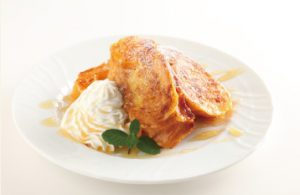
駅前パーラー JO-TERRACE OSAKA店
喫茶
挽きたてコーヒー豆を丁寧に抽出したコーヒーと
昔懐かしい喫茶店メニュー、
絶品パンケーキ&フレンチトーストをお楽しみ下さい。
-----------------------------------------------------------------------
営業時間 8:00〜20:00（L.O.19:30）
-----------------------------------------------------------------------
電話番号 06-6942-3030
-----------------------------------------------------------------------
-----------------------------------------------------------------------
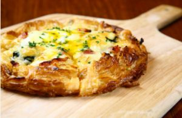
Italian Dining NATURA
イタリアン
独自の製法で１０年以上大人気のパイ生地ピザ（パイッツァ）
厳選されたイタリア料理もお楽しみください！
-----------------------------------------------------------------------
営業時間 11:00〜24:00（L.O.23:00）
-----------------------------------------------------------------------
電話番号 06-6942-3535
-----------------------------------------------------------------------
錦城亭（キンジョウテイ）
カフェ＆和ダイニング
すき焼き＆しゃぶしゃぶや
和テイストのカジュアルなダイニング！
国産ビールメーカー４社の生ビールあります！
-----------------------------------------------------------------------
営業時間 10:00～23:30
（L.O.22:30フード L.O.23:00ドリンク）
-----------------------------------------------------------------------
電話番号 06-6947-3333
-----------------------------------------------------------------------
-----------------------------------------------------------------------
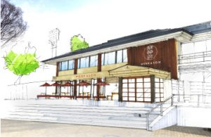
麺菓装
和食・和スイーツ・和装体験
大阪のおうどんや和スイーツと一緒に和装体験が楽しめます。
着物を着てスタジオ撮影や大阪城の散策も…
-----------------------------------------------------------------------
営業時間 10:00～23:00
（着物studio 10:00～19:00）
-----------------------------------------------------------------------
電話番号 06-6949-3600
-----------------------------------------------------------------------
-----------------------------------------------------------------------
TAKAHIRO
RAMEN &クラフトビール専門店
大阪トップクラス行列ラーメンの味とともに、
200インチの大画面でアーティストのライブ映像が
楽しめる「ラーメン＆樽生クラフトビール専門店」。
-----------------------------------------------------------------------
営業時間 16:00〜23:00
-----------------------------------------------------------------------
電話番号 06-6450-6941
-----------------------------------------------------------------------
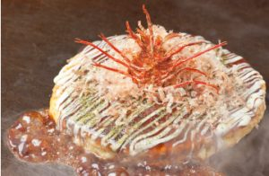
名代 千房 JO-TERRACE OSAKA店
お好み焼・鉄板焼
千房の由来は大阪城から始まった。
粉モンの代表はお好み焼。名代と名乗るからには
大阪を代表する顔になる為に千房はここに来た。
-----------------------------------------------------------------------
営業時間 11:00〜22:00（L.O.21:30）
-----------------------------------------------------------------------
電話番号 06-6450-6900
-----------------------------------------------------------------------
-----------------------------------------------------------------------
ALOHA FOOD HALL SHO-GI
ハワイアングルメ
日本初上陸、ハワイスタイルのフードホール。
全ての店舗で本場の空気感とハワイアングルメを
体感して頂けます。（１２０席以上）
-----------------------------------------------------------------------
営業時間 11:00〜22:00
-----------------------------------------------------------------------
電話番号 06-6450-6881
-----------------------------------------------------------------------
-----------------------------------------------------------------------
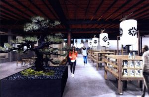
大阪城下町（OSAKA JOKAMACHI）
茶菓子・飲食・お土産・イベント ※2018年春 開業予定
天守閣を眺められる場所にイベント広場を
囲んだ和モダンフードコート風の仲見世。
大阪城に大阪のもん、和のうまいもん、ええもんでしょう。
-----------------------------------------------------------------------
営業時間 9:00〜23:00 (一部店舗を除く)
-----------------------------------------------------------------------
電話番号 0570-09-0014
-----------------------------------------------------------------------
-----------------------------------------------------------------------
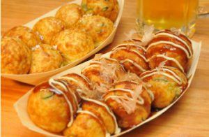
たこ焼道楽わなか 大阪城公園店
たこ焼き・お好み焼き・焼きそば
大阪名物のたこ焼を中心にオリジナルメニュー
を多数ご用意しております。
大阪のソウルフードを満喫していただけます。
-----------------------------------------------------------------------
営業時間 11:00～22:00（Ｌ.Ｏ.21:30）
-----------------------------------------------------------------------
電話番号 06-6949-3303
-----------------------------------------------------------------------
支払い方法 現金のみ
-----------------------------------------------------------------------
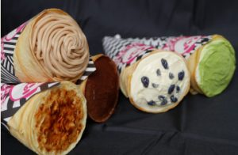
神戸バタークレープ専門店 ヒステリックジャム
クレープ
自由な発想で驚きとワクワクに満ちた、思わず笑顔になるスイーツで
「楽しい&おいしいひととき」をお届けします。
-----------------------------------------------------------------------
営業時間 12:00〜19:00
-----------------------------------------------------------------------
電話番号 06-6450-6696
-----------------------------------------------------------------------
支払い方法 現金のみ
-----------------------------------------------------------------------
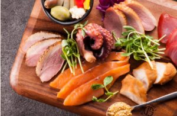
Taste of THE LANDMARK SQUARE OSAKA
カフェ＆バーラウンジ
香り高い紅茶で楽しむアフタヌーンティーや、ソムリエ厳選のシャンパン、
ワインなどをお楽しみ頂けるラウンジです。
-----------------------------------------------------------------------
営業時間
ランチ 11:00〜17:00（L.O.16:30）
ディナー 17:00〜23:00（L.O. 22:00）
-----------------------------------------------------------------------
電話番号 06-6941-0771
-----------------------------------------------------------------------
-----------------------------------------------------------------------
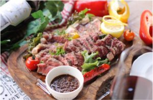
good spoon All Day Brunch & Dinner & BBQ Terrace
カフェレストラン＆BBQ
南堀江で人気のカフェが天守閣を眺めながらBBQを楽しめるお店をつくりました。
ブランチやディナーも楽しいオシャレな空間です。
-----------------------------------------------------------------------
営業時間 11:00〜23:00（L.O.22:00）
-----------------------------------------------------------------------
電話番号 06-6450-6780
-----------------------------------------------------------------------
-----------------------------------------------------------------------
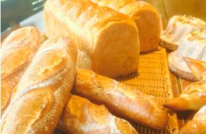
Bakery Ferdinand
Bakery＆Wine
老舗ベーカリーのパン各種とサンドイッチがワインと食べれるお店！
ご気軽にテイクアウトもどうぞ。
-----------------------------------------------------------------------
営業時間 10:00～20:00
-----------------------------------------------------------------------
電話番号 06-6450-6969
-----------------------------------------------------------------------
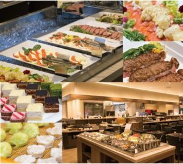
城の森ダイニング
ブッフェレストラン
ブッフェスタイルの大型レストランとなっており、和洋折衷、
四季折々の料理を提供します。団体、パーティーも対応可能です。
-----------------------------------------------------------------------
営業時間
11:00～23:00 （L.O. 22:30）
8：00～10：00 モーニング営業（土・日・祝日のみ）
-----------------------------------------------------------------------
電話番号 06-6450-6744
-----------------------------------------------------------------------
-----------------------------------------------------------------------
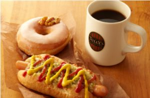
タリーズコーヒー
カフェ
世界各国より厳選したコーヒーや、一杯一杯手作りの
エスプレッソドリンクを気軽にお楽しみいただけます。
-----------------------------------------------------------------------
営業時間 8:00～20:00
※イベント時は、営業時間が異なる場合があります
-----------------------------------------------------------------------
電話番号 06-6949-2121
-----------------------------------------------------------------------
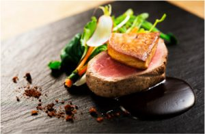
キャッスルガーデン OSAKA
モダンフレンチ
地産地消をモットーに、全国から厳選された食材を使用。
ミシュランシェフ監修コース料理が楽しめます。
-----------------------------------------------------------------------
営業時間 11:00~21:00
-----------------------------------------------------------------------
電話番号 06-6252-2224
-----------------------------------------------------------------------
-----------------------------------------------------------------------
ページ最上部へ